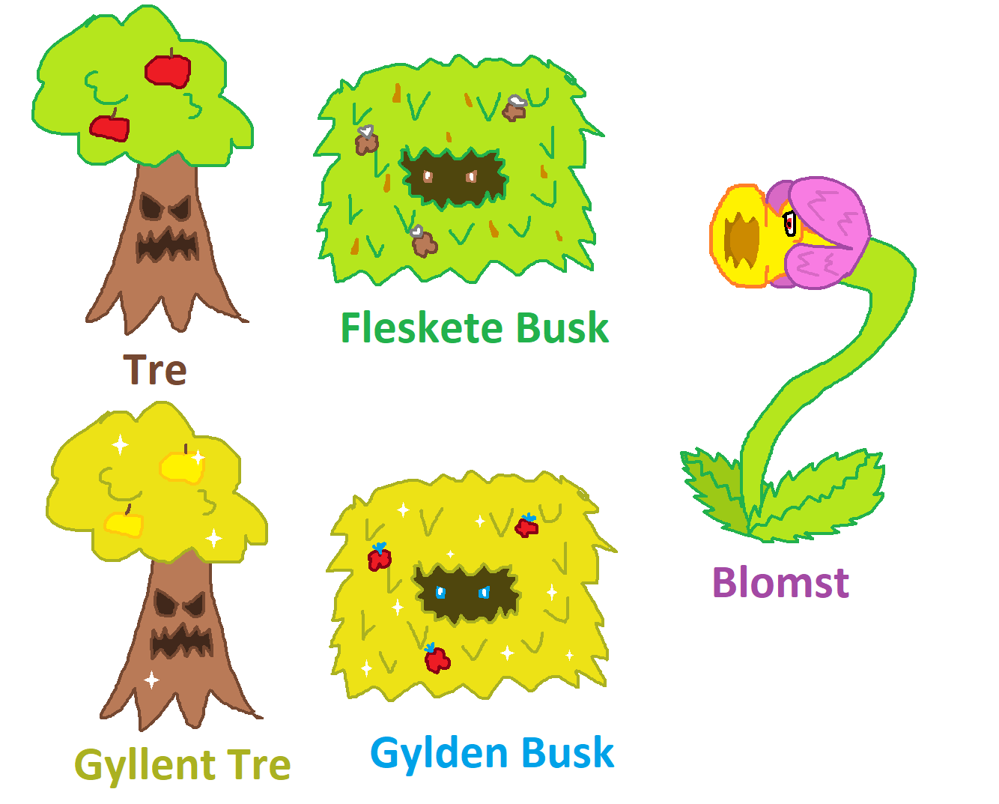

Text RPG er et lite RPG lignende spill hvor du kan velge dine egne utstyr og veier. Det finnes fem ulike fiender du kan bekjempe; et Tre, et Gyllent Tre en Gylden Busk, en Fleskete Busk og en Blomst
| Fiende Stats | Liv | Damage | Mat | XP |
|---|---|---|---|---|
| Tre/Gyllent Tre | 6 | Normalt: 3 HARDT: 5 Svakt: 2 | Et Eple Går opp med 2 liv | Tre 5 Gyllent Tre 25 |
| Fleskete Busk/ Gylden Busk | 5 | Normalt: 1 HARDT: 2 Svakt: 0 | Et Bær Går opp med 2 liv | Fleskete Busk 0 Gylden Busk 25 |
| Blomst | 7 | Normalt: 3 (skal være 4) HARDT: 4 (skal være 6) Svakt: 2 | En Bie Går opp med 2 liv | Bra ending 30 Nøytral ending 25 (Soppelandsbyen 50) |

Uoffisielle illustrasjoner av anonym leser
| Bra ending | Nøytral ending |
|---|---|
| Den bra endingen får du, om du velge å bekjempe blomsten og klarer å beseire den.
I denne endingen får du 30 xp og blir du hedret til "Soppelandsbyens Helt", de gir deg ditt eget hus som du kan bo i resten av livet. | Den nøytrale endingen får du, om du velger å prøve å slå lag med blomsten, men blomsten nekter, og angriper deg.
I denne endingen får du 25 xp og blir hedret til "Soppelandsbyens Patetiske Helt", de gir deg ditt eget skur som du kan bo i resten av livet. Det er trodd at grunnen til at de gir deg en litt verre premie er fordi du ville slå lag med blomsten, men du beseiret den så du er fortsatt helten deres. |
| Ond ending | Dårlig ending |
| Den onde endingen får du, om du velger å slå lag med blomsten.
Du har to forsøk på å slå lag med blomsten, og begge gangene har du en 50% sjanse på å bli akseptert. I denne endingen beseirer du Soppelandsbyen og får du 50 xp, du og blomsten fortsetter å være onde og beseirer flere uskyldige landsbyer. |
Den dårlige endingen får du om du har 0 eller mindre liv.
Dette er egentlig ikke en ordentlig ending, men siden den det restarter spillet synes vi det telles I denne endingen kommer det an på hvilken fiende du dør av
|